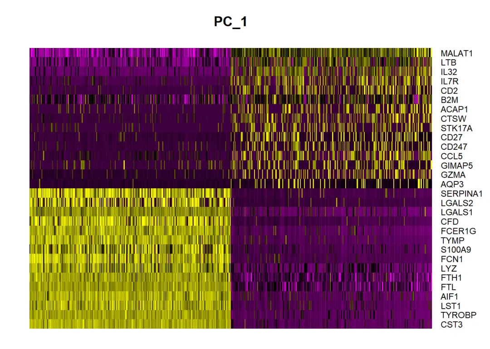
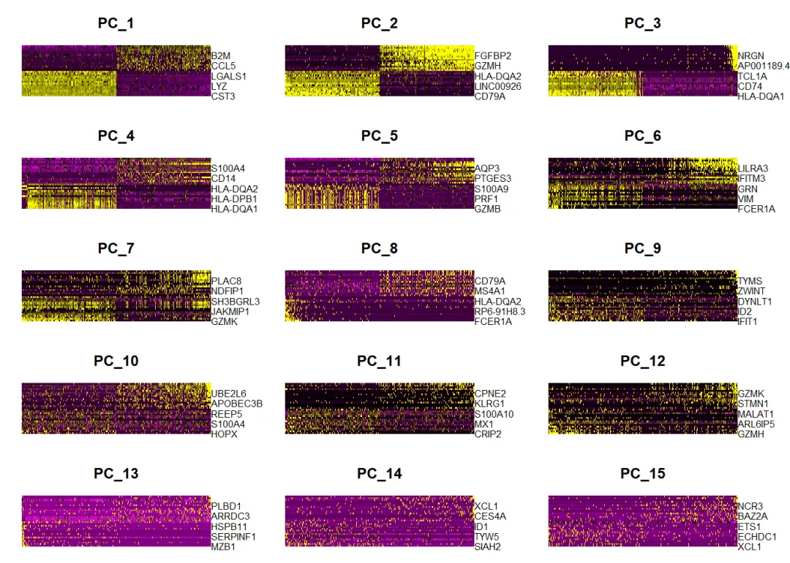
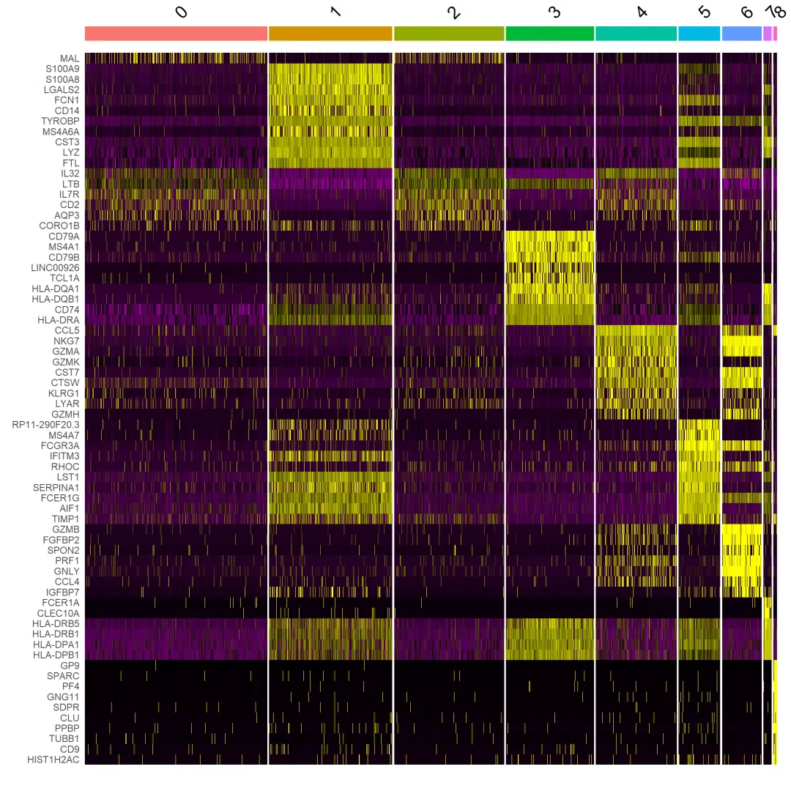
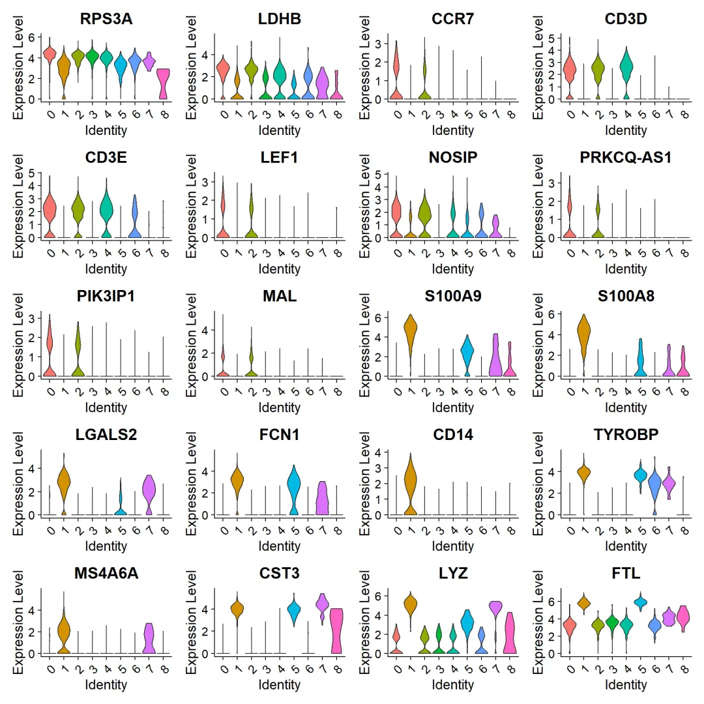
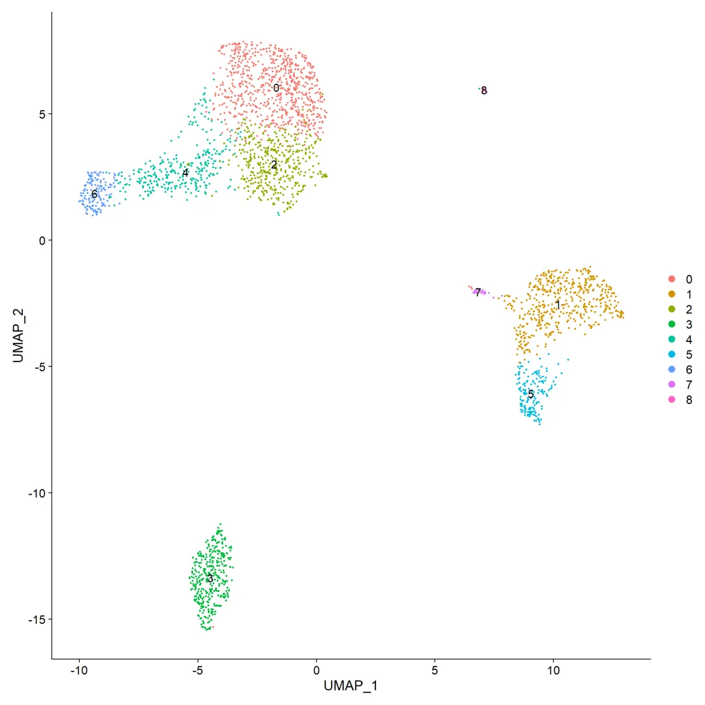
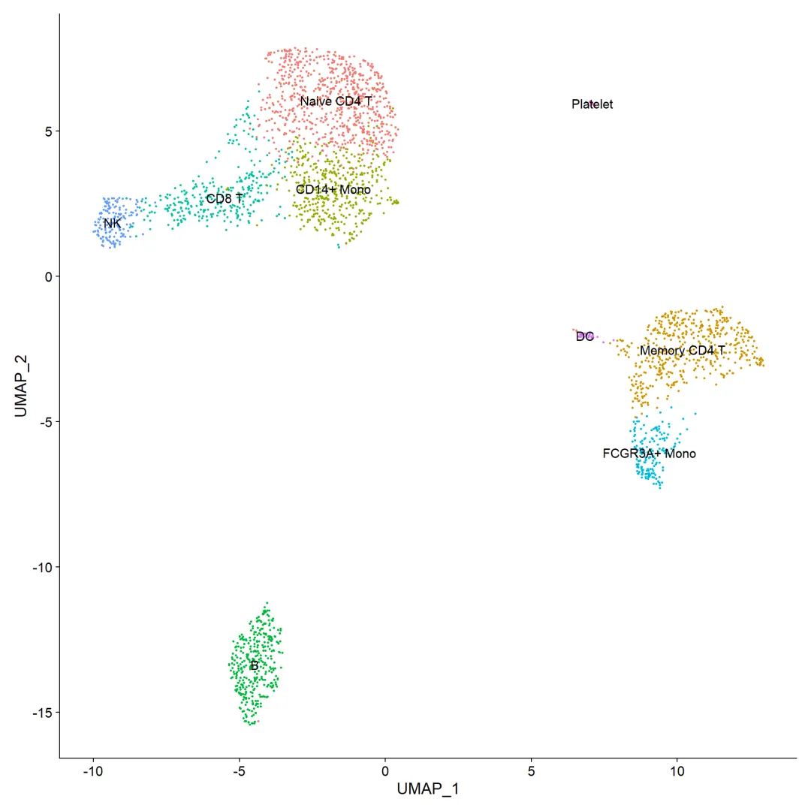
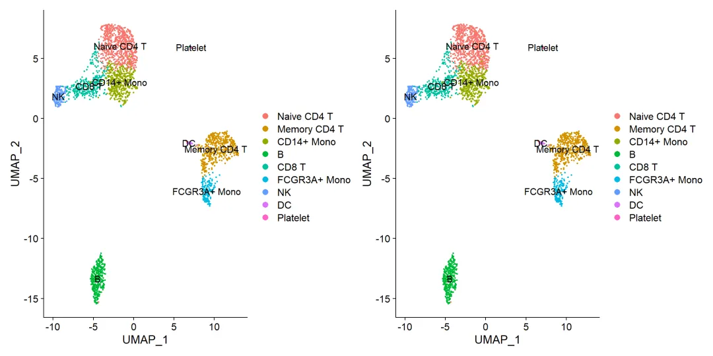

手把手教你做单细胞测序数据分析|5.细胞类型注释，从入门到入土
原文：https://mp.weixin.qq.com/s?__biz=MzAwMzIzOTk5OQ==&mid=2247500167&idx=2&sn=8de136b938e8d4753042d23166a24026&chksm=9b3cb8d7ac4b31c19c843810c7fe4341515df8ba6fff86a0ebff9d830edfcd656a29d18011c9#rd 合集：单细胞教程全收录
方法一：视频教程
 这一讲内容关于细胞类型注释，之前的课程中我们已对单细胞转录组测序的基本分析流程做了基本的梳理，相信大家已经可以完成一些基础的分析。单细胞转录组测序的pipeline设计较为复杂、也不能像bulk RNA-Seq一样设计通用的自动化分析流程，最大的原因便是不同数据集之间的细胞群注释迥然不同，分析数据时需要做到足够的个性化。因此本次课程我们给大家提供了数据库注释、singleR内置数据集与自定义注释、seurat内置注释等方法供大家选择。相信大家完成本次课程的学习，可以解决单细胞类群注释的所有问题。
这一讲内容关于细胞类型注释，之前的课程中我们已对单细胞转录组测序的基本分析流程做了基本的梳理，相信大家已经可以完成一些基础的分析。单细胞转录组测序的pipeline设计较为复杂、也不能像bulk RNA-Seq一样设计通用的自动化分析流程，最大的原因便是不同数据集之间的细胞群注释迥然不同，分析数据时需要做到足够的个性化。因此本次课程我们给大家提供了数据库注释、singleR内置数据集与自定义注释、seurat内置注释等方法供大家选择。相信大家完成本次课程的学习，可以解决单细胞类群注释的所有问题。
第一个代码块中没有注释，看不懂的同学去看一下前面的教程(手把手教你做单细胞测序数据分析|3.单样本分析(2023年重置))，测试数据也与那里的相同。
视频教程，版面原因变成画中画了，建议阅读原文去B站观看：
B站连播更方便： https://www.bilibili.com/video/BV1S44y1b76Z?p=6
准备工作
进行预处理，作到细胞注释前的步骤 第一个代码块中没有注释 ，看不懂的同学去看一下我们的第三讲 单样本分析
# 预处理到细胞注释前的步骤：
if(T){rm(list = ls())
if (!require("Seurat"))install.packages("Seurat")
if (!require("BiocManager", quietly = TRUE))install.packages("BiocManager")
if (!require("multtest", quietly = TRUE))install.packages("multtest")
if (!require("dplyr", quietly = TRUE))install.packages("dplyr")
pbmc.data <- Read10X('pbmc3k_filtered_gene_bc_matrices/filtered_gene_bc_matrices/hg19/')
pbmc <- CreateSeuratObject(counts = pbmc.data, project = "pbmc3k", min.cells = 3, min.features = 200)
pbmc[["percent.mt"]] <- PercentageFeatureSet(pbmc, pattern = "^MT-")
pbmc <- subset(pbmc, subset = nFeature_RNA > 200 & nFeature_RNA < 2500 & percent.mt < 5)
pbmc <- NormalizeData(pbmc, normalization.method = "LogNormalize", scale.factor = 10000)
pbmc <- FindVariableFeatures(pbmc, selection.method = "vst", nfeatures = 2000)
top10 <- head(VariableFeatures(pbmc), 10)
pbmc <- ScaleData(pbmc, features = rownames(pbmc))
pbmc <- ScaleData(pbmc, vars.to.regress = "percent.mt")
pbmc <- RunPCA(pbmc, features = VariableFeatures(object = pbmc))
print(pbmc[["pca"]], dims = 1:5, nfeatures = 5)
VizDimLoadings(pbmc, dims = 1:2, reduction = "pca")
DimHeatmap(pbmc, dims = 1, cells = 500, balanced = TRUE)
DimHeatmap(pbmc, dims = 1:15, cells = 500, balanced = TRUE)
pbmc <- JackStraw(pbmc, num.replicate = 100)
pbmc <- ScoreJackStraw(pbmc, dims = 1:20)
JackStrawPlot(pbmc, dims = 1:15)
pbmc <- FindNeighbors(pbmc, dims = 1:10)
pbmc <- FindClusters(pbmc, resolution = 0.5)
head(Idents(pbmc), 5)
pbmc <- RunUMAP(pbmc, dims = 1:10)
pbmc <- RunTSNE(pbmc, dims = 1:10)
DimPlot(pbmc, reduction = "umap", label = TRUE)
pbmc.markers <- FindAllMarkers(pbmc, only.pos = TRUE, min.pct = 0.25, logfc.threshold = 0.25)
library(dplyr)
pbmc.markers %>% group_by(cluster) %>% top_n(n = 2, wt = avg_log2FC)
}
## PC_ 1
## Positive: CST3, TYROBP, LST1, AIF1, FTL
## Negative: MALAT1, LTB, IL32, IL7R, CD2
## PC_ 2
## Positive: CD79A, MS4A1, TCL1A, HLA-DQA1, HLA-DQB1
## Negative: NKG7, PRF1, CST7, GZMA, GZMB
## PC_ 3
## Positive: HLA-DQA1, CD79A, CD79B, HLA-DQB1, HLA-DPA1
## Negative: PPBP, PF4, SDPR, SPARC, GNG11
## PC_ 4
## Positive: HLA-DQA1, CD79B, CD79A, MS4A1, HLA-DQB1
## Negative: VIM, IL7R, S100A6, S100A8, IL32
## PC_ 5
## Positive: GZMB, FGFBP2, S100A8, NKG7, GNLY
## Negative: LTB, IL7R, CKB, MS4A7, RP11-290F20.3


## Modularity Optimizer version 1.3.0 by Ludo Waltman and Nees Jan van Eck
##
## Number of nodes: 2638
## Number of edges: 95893
##
## Running Louvain algorithm...
## Maximum modularity in 10 random starts: 0.8735
## Number of communities: 9
## Elapsed time: 0 seconds
## # A tibble: 18 × 7
## # Groups: cluster [9]
## p_val avg_log2FC pct.1 pct.2 p_val_adj cluster gene
## <dbl> <dbl> <dbl> <dbl> <dbl> <fct> <chr>
## 1 1.88e-117 1.08 0.913 0.588 2.57e-113 0 LDHB
## 2 5.01e- 85 1.34 0.437 0.108 6.88e- 81 0 CCR7
## 3 0 5.57 0.996 0.215 0 1 S100A9
## 4 0 5.48 0.975 0.121 0 1 S100A8
## 5 1.93e- 80 1.27 0.981 0.65 2.65e- 76 2 LTB
## 6 2.91e- 58 1.27 0.667 0.251 3.98e- 54 2 CD2
## 7 0 4.31 0.939 0.042 0 3 CD79A
## 8 1.06e-269 3.59 0.623 0.022 1.45e-265 3 TCL1A
## 9 3.60e-221 3.21 0.984 0.226 4.93e-217 4 CCL5
## 10 4.27e-176 3.01 0.573 0.05 5.85e-172 4 GZMK
## 11 3.51e-184 3.31 0.975 0.134 4.82e-180 5 FCGR3A
## 12 2.03e-125 3.09 1 0.315 2.78e-121 5 LST1
## 13 3.17e-267 4.83 0.961 0.068 4.35e-263 6 GZMB
## 14 1.04e-189 5.28 0.961 0.132 1.43e-185 6 GNLY
## 15 1.48e-220 3.87 0.812 0.011 2.03e-216 7 FCER1A
## 16 1.67e- 21 2.87 1 0.513 2.28e- 17 7 HLA-DPB1
## 17 7.73e-200 7.24 1 0.01 1.06e-195 8 PF4
## 18 3.68e-110 8.58 1 0.024 5.05e-106 8 PPBP
方法一：查数据库
library(dplyr)
# 按照log2FC筛选top10基因
top10 <- pbmc.markers %>% group_by(cluster) %>% top_n(n = 10, wt = avg_log2FC)
#展示前10个标记基因的热图：
DoHeatmap(pbmc, features = top10$gene) + NoLegend()
## Warning in DoHeatmap(pbmc, features = top10$gene): The following features were
## omitted as they were not found in the scale.data slot for the RNA assay: CD8A,
## VPREB3, CD40LG, PIK3IP1, PRKCQ-AS1, NOSIP, LEF1, CD3E, CD3D, CCR7, LDHB, RPS3A

VlnPlot(pbmc, features = top10$gene[1:20],pt.size=0)

DimPlot(pbmc,label = T)

通过标记基因及文献，可以人工确定各分类群的细胞类型，则可以如下手动添加细胞群名称：帮助单细胞测序进行注释的数据库中这两个是我比较心水的：
cellmarker ：
http://bio-bigdata.hrbmu.edu.cn/CellMarker/
MCA：
http://bis.zju.edu.cn/MCA/
bfreaname.pbmc <- pbmc
# 新的细胞名称，与cluster一一对应
new.cluster.ids <- c("Naive CD4 T", "Memory CD4 T", "CD14+ Mono", "B", "CD8 T", "FCGR3A+ Mono",
"NK", "DC", "Platelet")
# 重命名
names(new.cluster.ids) <- levels(pbmc)
pbmc <- RenameIdents(pbmc, new.cluster.ids)
DimPlot(pbmc, reduction = "umap", label = TRUE, pt.size = 0.5) + NoLegend()

方法二：通过singleR注释
这一方法很鸡肋，不推荐、不推荐、不推荐！主要是由于很难找到合适的参考数据 ，但是对于免疫细胞的注释还是有可观效果的。
if(!require(SingleR))BiocManager::install('SingleR')
# remove.packages('matrixStats')#移除后可能需要重新打开
if(!require(matrixStats))BiocManager::install('matrixStats')
# remove.packages(c('dplyr','ellipsis'))
# install.packages(c('dplyr','ellipsis'))
# remove.packages(c('vctrs'))
# install.packages(c('vctrs'))
#有一些版本冲突，需要重新安装一些包。
if(!require(celldex))devtools::install_github('LTLA/celldex')# 如果需要选择更新某些包，推荐选1更新所有包
###内置数据集：
# cg=BlueprintEncodeData()
# cg=DatabaseImmuneCellExpressionData()
# cg=NovershternHematopoieticData()
# cg=MonacoImmuneData()
# cg=ImmGenData()
# cg=MouseRNAseqData()
# cg=HumanPrimaryCellAtlasData()
cg<-ImmGenData()#选取我们要使用的免疫细胞参考数据集
assay_for_SingleR <- GetAssayData(bfreaname.pbmc, slot="data")#取出样本中的表达序列
predictions <- SingleR(test=assay_for_SingleR,
ref=cg, labels=cg$label.main)
#以kidney中提取的阵列为输入数据，以小鼠的阵列作为参考，predict细胞类型
table(predictions$labels)#看看都注释到了哪些细胞
##
## B cells Endothelial cells Eosinophils Mast cells
## 2555 19 18 25
## NK cells Stromal cells
## 11 10
# 取出celltype对应数据框
cellType=data.frame(seurat=bfreaname.pbmc@meta.data$seurat_clusters,
predict=predictions$labels)#得到seurat中编号与预测标签之间的关系
sort(table(cellType[,1]))
##
## 8 7 6 5 4 3 2 1 0
## 14 32 154 162 316 342 429 480 709
table(cellType[,1:2])#访问celltyple的2~3列
## predict
## seurat B cells Endothelial cells Eosinophils Mast cells NK cells Stromal cells
## 0 696 5 4 0 3 1
## 1 458 2 6 12 2 0
## 2 415 4 6 0 2 2
## 3 342 0 0 0 0 0
## 4 311 4 0 0 1 0
## 5 137 3 1 13 1 7
## 6 151 1 1 0 1 0
## 7 31 0 0 0 1 0
## 8 14 0 0 0 0 0
#可以看出 singleR如果没有合适的数据集，得到的结果有多拉跨了吧
#这里就没必要再往下重命名了
当你有合适的参考数据集时可以用方法三方法四 进行注释
你有合适的参考数据集时可以用方法三、方法四进行注释
方法三：自定义singleR注释
#我们走个极端，拿它自己作为自己的参考数据集，看看注释的准不准
##########利用singleR构建自己的数据作为参考数据集########
library(SingleR)
library(Seurat)
library(ggplot2)
## Warning: 程辑包'ggplot2'是用R版本4.2.2 来建造的
if(!require(textshape))install.packages('textshape')
## 载入需要的程辑包：textshape
## Warning: 程辑包'textshape'是用R版本4.2.3 来建造的
##
## 载入程辑包：'textshape'
## The following object is masked from 'package:dplyr':
##
## combine
## The following object is masked from 'package:Biobase':
##
## combine
## The following object is masked from 'package:BiocGenerics':
##
## combine
if(!require(scater))BiocManager::install('scater')
## 载入需要的程辑包：scater
## Warning in library(package, lib.loc = lib.loc, character.only = TRUE,
## logical.return = TRUE, : 不存在叫'scater'这个名字的程辑包
## Bioconductor version 3.16 (BiocManager 1.30.20), R 4.2.1 (2022-06-23 ucrt)
## Installing package(s) 'scater'
## 还安装相依关系'Cairo', 'scuttle', 'RcppML', 'ggrastr'
## 程序包'Cairo'打开成功，MD5和检查也通过
## 程序包'scuttle'打开成功，MD5和检查也通过
## 程序包'RcppML'打开成功，MD5和检查也通过
## 程序包'ggrastr'打开成功，MD5和检查也通过
## 程序包'scater'打开成功，MD5和检查也通过
##
## 下载的二进制程序包在
## C:\Users\User\AppData\Local\Temp\RtmpOmhQ3b\downloaded_packages里
## Old packages: 'AnnoProbe', 'annotate', 'AnnotationFilter', 'ape', 'aplot',
## 'arrow', 'AUCell', 'av', 'basilisk', 'basilisk.utils', 'beachmat', 'BiocIO',
## 'BiocNeighbors', 'BiocParallel', 'BiocSingular', 'biocViews', 'biomaRt',
## 'BiSeq', 'boot', 'brew', 'broom', 'BSgenome', 'bsseq', 'bsseqData', 'cachem',
## 'callr', 'car', 'caret', 'checkmate', 'ChIPseeker', 'class', 'cli', 'clock',
## 'clue', 'cluster', 'codetools', 'cola', 'colorspace', 'ComplexHeatmap',
## 'crul', 'curl', 'deldir', 'dendextend', 'desc', 'DESeq2', 'devtools',
## 'DiagrammeR', 'digest', 'dir.expiry', 'doRNG', 'DSS', 'dtplyr', 'EBImage',
## 'edgeR', 'emoa', 'EnhancedVolcano', 'enrichplot', 'ensembldb', 'eulerr',
## 'expm', 'extrafont', 'fastmap', 'fastseg', 'fitdistrplus', 'flexmix', 'FNN',
## 'forcats', 'foreign', 'Formula', 'fs', 'future', 'future.apply', 'gapminder',
## 'gargle', 'gdtools', 'genefilter', 'geneplotter', 'GENIE3', 'genomation',
## 'GenomicAlignments', 'GenomicFeatures', 'GenSA', 'GEOquery', 'gert',
## 'ggalluvial', 'ggbeeswarm', 'ggfittext', 'ggh4x', 'ggplot2', 'ggpubr',
## 'ggsci', 'ggsignif', 'ggstar', 'ggtext', 'ggvenn', 'gh', 'gifski',
## 'gitcreds', 'globaltest', 'googledrive', 'googlesheets4', 'graph',
## 'graphite', 'graphlayouts', 'gridtext', 'grImport', 'GSEABase', 'gson',
## 'GSVA', 'gtable', 'hardhat', 'haven', 'HDF5Array', 'hdf5r', 'hexbin',
## 'Hmisc', 'hms', 'HSMMSingleCell', 'httpuv', 'igraph', 'imager', 'impute',
## 'influenceR', 'interp', 'irlba', 'jpeg', 'kernlab', 'KernSmooth', 'later',
## 'lattice', 'leidenbase', 'limma', 'listenv', 'lme4', 'locfit', 'lubridate',
## 'magick', 'maptools', 'markdown', 'MASS', 'Matrix', 'mclust', 'MeSHDbi',
## 'meshes', 'methylKit', 'methylSig', 'mgcv', 'microbenchmark', 'minqa',
## 'mixtools', 'modelr', 'monocle', 'multtest', 'network', 'nlme', 'NMF',
## 'nnet', 'openintro', 'org.Ag.eg.db', 'org.At.tair.db', 'org.Bt.eg.db',
## 'org.Ce.eg.db', 'org.Cf.eg.db', 'org.Dm.eg.db', 'org.Dr.eg.db',
## 'org.EcK12.eg.db', 'org.EcSakai.eg.db', 'org.Gg.eg.db', 'org.Hs.eg.db',
## 'org.Mm.eg.db', 'org.Mmu.eg.db', 'org.Pt.eg.db', 'org.Rn.eg.db',
## 'org.Sc.sgd.db', 'org.Ss.eg.db', 'org.Xl.eg.db', 'parallelly', 'pbapply',
## 'pbkrtest', 'pkgbuild', 'pkgdown', 'pkgload', 'pkgmaker', 'preprocessCore',
## 'pROC', 'processx', 'prodlim', 'profvis', 'progressr', 'proj4',
## 'ProtGenerics', 'proxyC', 'pryr', 'ps', 'psych', 'quantreg', 'R.utils',
## 'ragg', 'RBGL', 'RcisTarget', 'Rcpp', 'RcppAnnoy', 'RcppArmadillo',
## 'RcppParallel', 'RcppTOML', 'reactome.db', 'ReactomePA', 'readr', 'readxl',
## 'recipes', 'reticulate', 'rgeos', 'rgl', 'rhdf5', 'rhdf5filters', 'Rhdf5lib',
## 'Rhtslib', 'roxygen2', 'rpart', 'Rsamtools', 'rstatix', 'rsvg',
## 'rtracklayer', 'Rttf2pt1', 'rversions', 's2', 'ScaledMatrix', 'scattermore',
## 'scatterpie', 'scatterplot3d', 'segmented', 'seqPattern', 'sf', 'sfsmisc',
## 'simplifyEnrichment', 'SingleCellExperiment', 'SingleR', 'skmeans', 'sna',
## 'sp', 'sparsesvd', 'spatial', 'spatstat.data', 'spatstat.explore',
## 'spatstat.geom', 'spatstat.random', 'spatstat.sparse', 'spatstat.utils',
## 'statnet.common', 'stringi', 'survival', 'svglite', 'TCGAbiolinks',
## 'TCGAbiolinksGUI.data', 'testthat', 'tictoc', 'tidyverse', 'tm', 'triebeard',
## 'tzdb', 'units', 'vegan', 'VGAM', 'viridis', 'viridisLite', 'vroom', 'waldo',
## 'whisker', 'wk', 'XML', 'xml2', 'zellkonverter', 'zip', 'zoo'
if(!require(SingleCellExperiment))BiocManager::install('SingleCellExperiment')
## 载入需要的程辑包：SingleCellExperiment
library(dplyr)
# 读入scRNA数据 -------
myref <- pbmc##这里为了检测，我们将参考数据集与目标数据集用同一个数据进行测试
# 将当前标签存入celltype中
myref$celltype <- Idents(myref)
table(Idents(myref))
##
## Naive CD4 T Memory CD4 T CD14+ Mono B CD8 T FCGR3A+ Mono
## 709 480 429 342 316 162
## NK DC Platelet
## 154 32 14
# 读入参考数据集 -------
Refassay <- log1p(AverageExpression(myref, verbose = FALSE)$RNA)#求
#Ref <- textshape::column_to_rownames(Ref, loc = 1)#另一种得到参考矩阵的办法
head(Refassay)#看看表达矩阵长啥样
## Naive CD4 T Memory CD4 T CD14+ Mono B CD8 T
## AL627309.1 0.006006857 0.04740195 0.006651185 0.00000000 0.01746659
## AP006222.2 0.000000000 0.01082590 0.009196592 0.00000000 0.01016628
## RP11-206L10.2 0.007300235 0.00000000 0.000000000 0.02055829 0.00000000
## RP11-206L10.9 0.000000000 0.01044641 0.000000000 0.00000000 0.00000000
## LINC00115 0.014803993 0.03685000 0.033640559 0.03836728 0.01657028
## NOC2L 0.410974333 0.24101294 0.312227749 0.46371195 0.39676059
## FCGR3A+ Mono NK DC Platelet
## AL627309.1 0.00000000 0.00000000 0.0000000 0
## AP006222.2 0.00000000 0.00000000 0.0000000 0
## RP11-206L10.2 0.00000000 0.00000000 0.0812375 0
## RP11-206L10.9 0.01192865 0.00000000 0.0000000 0
## LINC00115 0.01458683 0.05726061 0.0000000 0
## NOC2L 0.40564359 0.53378022 0.2841343 0
ref_sce <- SingleCellExperiment::SingleCellExperiment(assays=list(counts=Refassay))
#参考数据集需要构建成一个SingleCellExperiment对象
ref_sce=scater::logNormCounts(ref_sce)
logcounts(ref_sce)[1:4,1:4]
## Naive CD4 T Memory CD4 T CD14+ Mono B
## AL627309.1 0.009250892 0.06711500 0.009538416 0.00000000
## AP006222.2 0.000000000 0.01560549 0.013172144 0.00000000
## RP11-206L10.2 0.011235027 0.00000000 0.000000000 0.02967623
## RP11-206L10.9 0.000000000 0.01506130 0.000000000 0.00000000
colData(ref_sce)$Type=colnames(Refassay)
ref_sce#构建完成
## class: SingleCellExperiment
## dim: 13714 9
## metadata(0):
## assays(2): counts logcounts
## rownames(13714): AL627309.1 AP006222.2 ... PNRC2.1 SRSF10.1
## rowData names(0):
## colnames(9): Naive CD4 T Memory CD4 T ... DC Platelet
## colData names(2): sizeFactor Type
## reducedDimNames(0):
## mainExpName: NULL
## altExpNames(0):
###提取自己的单细胞矩阵##########
testdata <- GetAssayData(bfreaname.pbmc, slot="data")
pred <- SingleR(test=testdata, ref=ref_sce,
labels=ref_sce$Type,
#clusters = scRNA@active.ident
)
# 查看各label对应的细胞数量
table(pred$labels)
##
## B CD14+ Mono CD8 T DC FCGR3A+ Mono Memory CD4 T
## 344 537 308 31 179 464
## Naive CD4 T NK Platelet
## 601 160 14
head(pred)
## DataFrame with 6 rows and 5 columns
## scores first.labels tuning.scores
## <matrix> <character> <DataFrame>
## AAACATACAACCAC-1 0.336675:0.424807:0.430908:... CD8 T 0.321456:0.2879031
## AAACATTGAGCTAC-1 0.494458:0.381603:0.391545:... B 0.494458:0.4012752
## AAACATTGATCAGC-1 0.373678:0.519949:0.489834:... CD14+ Mono 0.411459:0.3466608
## AAACCGTGCTTCCG-1 0.341852:0.362193:0.353068:... Memory CD4 T 0.422782:0.3899934
## AAACCGTGTATGCG-1 0.233921:0.279848:0.329152:... NK 0.384988:0.0678734
## AAACGCACTGGTAC-1 0.391590:0.458438:0.426201:... CD14+ Mono 0.335794:0.2679515
## labels pruned.labels
## <character> <character>
## AAACATACAACCAC-1 CD8 T CD8 T
## AAACATTGAGCTAC-1 B B
## AAACATTGATCAGC-1 CD14+ Mono CD14+ Mono
## AAACCGTGCTTCCG-1 FCGR3A+ Mono FCGR3A+ Mono
## AAACCGTGTATGCG-1 NK NK
## AAACGCACTGGTAC-1 CD14+ Mono CD14+ Mono
as.data.frame(table(pred$labels))
## Var1 Freq
## 1 B 344
## 2 CD14+ Mono 537
## 3 CD8 T 308
## 4 DC 31
## 5 FCGR3A+ Mono 179
## 6 Memory CD4 T 464
## 7 Naive CD4 T 601
## 8 NK 160
## 9 Platelet 14
#pred@listData[["scores"]] #预测评分，想看看结构的可以自己看看
#同上，我们找一下seurat中类群与注释结果直接的关系
cellType=data.frame(seurat=bfreaname.pbmc@meta.data$seurat_clusters,
predict=pred$labels)#得到seurat中编号与预测标签之间的关系
sort(table(cellType[,1]))
##
## 8 7 6 5 4 3 2 1 0
## 14 32 154 162 316 342 429 480 709
table(cellType[,1:2])#访问celltyple的2~3列
## predict
## seurat B CD14+ Mono CD8 T DC FCGR3A+ Mono Memory CD4 T Naive CD4 T NK
## 0 2 159 13 0 0 0 535 0
## 1 0 0 0 1 17 462 0 0
## 2 0 355 10 0 0 0 64 0
## 3 341 1 0 0 0 0 0 0
## 4 1 22 282 0 0 0 2 9
## 5 0 0 0 0 162 0 0 0
## 6 0 0 3 0 0 0 0 151
## 7 0 0 0 30 0 2 0 0
## 8 0 0 0 0 0 0 0 0
## predict
## seurat Platelet
## 0 0
## 1 0
## 2 0
## 3 0
## 4 0
## 5 0
## 6 0
## 7 0
## 8 14
lalala <- as.data.frame(table(cellType[,1:2]))
finalmap <- lalala %>% group_by(seurat) %>% top_n(n = 1, wt = Freq)#找出每种seurat_cluster注释比例最高的对应类型
finalmap <-finalmap[order(finalmap$seurat),]$predict#找到seurat中0：8的对应预测细胞类型
print(finalmap)
## [1] Naive CD4 T Memory CD4 T CD14+ Mono B CD8 T
## [6] FCGR3A+ Mono NK DC Platelet
## 9 Levels: B CD14+ Mono CD8 T DC FCGR3A+ Mono Memory CD4 T Naive CD4 T ... Platelet
testname <- bfreaname.pbmc
# 重命名
new.cluster.ids <- as.character(finalmap)
names(new.cluster.ids) <- levels(testname)
testname <- RenameIdents(testname, new.cluster.ids)
p1 <- DimPlot(pbmc,label = T)
p2 <- DimPlot(testname,label = T)#比较一下测试数据与参考数据集之间有没有偏差
p1|p2#完美，无差别注释，当然了，我们这个参考数据用的比较极端

方法四、Seurat内置的投影
library(Seurat)
pancreas.query <- bfreaname.pbmc#待注释数据
# 与cca那里一样寻找Anchors
pancreas.anchors <- FindTransferAnchors(reference = pbmc, query = pancreas.query,
dims = 1:30)
## Performing PCA on the provided reference using 2000 features as input.
## Projecting cell embeddings
## Finding neighborhoods
## Finding anchors
## Found 7206 anchors
## Filtering anchors
## Retained 5268 anchors
pbmc$celltype <- Idents(pbmc)
predictions <- TransferData(anchorset = pancreas.anchors, refdata = pbmc$celltype,
dims = 1:30)
## Finding integration vectors
## Finding integration vector weights
## Predicting cell labels
# 将预测结果添加到待测数据集中
pancreas.query <- AddMetaData(pancreas.query, metadata = predictions)
#把注释加回原来的数据集
pancreas.query$prediction.match <- pancreas.query$predicted.id
table(pancreas.query$prediction.match)
##
## B CD14+ Mono CD8 T DC FCGR3A+ Mono Memory CD4 T
## 340 431 294 32 158 485
## Naive CD4 T NK Platelet
## 732 153 13
Idents(pancreas.query)<- 'prediction.match'
p1 <- DimPlot(pbmc,label = T)
p2 <- DimPlot(pancreas.query,label = T)#比较一下测试数据与参考数据集之间有没有偏差
p1|p2#完美，无差别注释，当然了，我们这个参考数据用的比较极端
[/code]

版本问题

[code]
#### 最近发现代码运行的最大障碍是各个packages的版本冲突问题，这里列出本次分析环境中的所有信息，报错时可以参考
sessionInfo()
## R version 4.2.1 (2022-06-23 ucrt)
## Platform: x86_64-w64-mingw32/x64 (64-bit)
## Running under: Windows 10 x64 (build 19044)
##
## Matrix products: default
##
## locale:
## [1] LC_COLLATE=Chinese (Simplified)_China.utf8
## [2] LC_CTYPE=Chinese (Simplified)_China.utf8
## [3] LC_MONETARY=Chinese (Simplified)_China.utf8
## [4] LC_NUMERIC=C
## [5] LC_TIME=Chinese (Simplified)_China.utf8
##
## attached base packages:
## [1] stats4 stats graphics grDevices utils datasets methods
## [8] base
##
## other attached packages:
## [1] SingleCellExperiment_1.18.0 textshape_1.7.3
## [3] ggplot2_3.4.1 celldex_1.11.1
## [5] SingleR_1.10.0 SummarizedExperiment_1.28.0
## [7] GenomicRanges_1.50.2 GenomeInfoDb_1.34.9
## [9] IRanges_2.32.0 S4Vectors_0.36.2
## [11] MatrixGenerics_1.10.0 matrixStats_0.63.0
## [13] dplyr_1.1.2 multtest_2.52.0
## [15] Biobase_2.58.0 BiocGenerics_0.44.0
## [17] BiocManager_1.30.20 SeuratObject_4.1.3
## [19] Seurat_4.3.0
##
## loaded via a namespace (and not attached):
## [1] utf8_1.2.3 spatstat.explore_3.0-5
## [3] reticulate_1.25 R.utils_2.12.0
## [5] tidyselect_1.2.0 RSQLite_2.3.1
## [7] AnnotationDbi_1.60.2 htmlwidgets_1.6.2
## [9] grid_4.2.1 BiocParallel_1.32.5
## [11] Rtsne_0.16 munsell_0.5.0
## [13] ScaledMatrix_1.4.1 codetools_0.2-18
## [15] ica_1.0-3 future_1.29.0
## [17] miniUI_0.1.1.1 withr_2.5.0
## [19] spatstat.random_2.2-0 colorspace_2.0-3
## [21] progressr_0.11.0 filelock_1.0.2
## [23] highr_0.10 knitr_1.42
## [25] rstudioapi_0.14 ROCR_1.0-11
## [27] tensor_1.5 listenv_0.8.0
## [29] labeling_0.4.2 GenomeInfoDbData_1.2.9
## [31] polyclip_1.10-4 bit64_4.0.5
## [33] farver_2.1.1 parallelly_1.32.1
## [35] vctrs_0.6.2 generics_0.1.3
## [37] xfun_0.39 BiocFileCache_2.6.1
## [39] R6_2.5.1 ggbeeswarm_0.6.0
## [41] rsvd_1.0.5 openintro_2.3.0
## [43] bitops_1.0-7 spatstat.utils_3.0-1
## [45] cachem_1.0.6 DelayedArray_0.24.0
## [47] promises_1.2.0.1 cherryblossom_0.1.0
## [49] scales_1.2.1 beeswarm_0.4.0
## [51] gtable_0.3.1 beachmat_2.12.0
## [53] globals_0.16.2 goftest_1.2-3
## [55] rlang_1.1.1 splines_4.2.1
## [57] lazyeval_0.2.2 spatstat.geom_2.4-0
## [59] yaml_2.3.7 reshape2_1.4.4
## [61] abind_1.4-5 httpuv_1.6.5
## [63] tools_4.2.1 ellipsis_0.3.2
## [65] jquerylib_0.1.4 RColorBrewer_1.1-3
## [67] ggridges_0.5.4 Rcpp_1.0.9
## [69] plyr_1.8.8 sparseMatrixStats_1.10.0
## [71] zlibbioc_1.44.0 purrr_1.0.1
## [73] RCurl_1.98-1.12 deldir_1.0-6
## [75] viridis_0.6.2 pbapply_1.6-0
## [77] cowplot_1.1.1 zoo_1.8-10
## [79] ggrepel_0.9.3 cluster_2.1.3
## [81] magrittr_2.0.3 data.table_1.14.8
## [83] scattermore_0.8 lmtest_0.9-40
## [85] RANN_2.6.1 airports_0.1.0
## [87] fitdistrplus_1.1-8 hms_1.1.2
## [89] patchwork_1.1.2 mime_0.12
## [91] evaluate_0.21 xtable_1.8-4
## [93] gridExtra_2.3 scater_1.26.1
## [95] compiler_4.2.1 tibble_3.2.1
## [97] crayon_1.5.2 KernSmooth_2.23-20
## [99] R.oo_1.25.0 htmltools_0.5.5
## [101] later_1.3.0 tzdb_0.3.0
## [103] tidyr_1.3.0 DBI_1.1.3
## [105] ExperimentHub_2.6.0 dbplyr_2.3.2
## [107] rappdirs_0.3.3 MASS_7.3-57
## [109] Matrix_1.5-3 readr_2.1.2
## [111] cli_3.6.0 R.methodsS3_1.8.2
## [113] parallel_4.2.1 igraph_1.4.1
## [115] pkgconfig_2.0.3 sp_1.5-0
## [117] scuttle_1.8.4 plotly_4.10.1
## [119] spatstat.sparse_3.0-0 vipor_0.4.5
## [121] bslib_0.4.2 XVector_0.38.0
## [123] stringr_1.5.0 digest_0.6.29
## [125] sctransform_0.3.5 RcppAnnoy_0.0.19
## [127] Biostrings_2.66.0 spatstat.data_3.0-0
## [129] rmarkdown_2.21 leiden_0.4.3
## [131] usdata_0.2.0 uwot_0.1.14
## [133] DelayedMatrixStats_1.20.0 curl_4.3.2
## [135] shiny_1.7.4 lifecycle_1.0.3
## [137] nlme_3.1-157 jsonlite_1.8.4
## [139] BiocNeighbors_1.14.0 viridisLite_0.4.1
## [141] limma_3.52.2 fansi_1.0.4
## [143] pillar_1.9.0 lattice_0.20-45
## [145] KEGGREST_1.38.0 fastmap_1.1.0
## [147] httr_1.4.6 survival_3.3-1
## [149] interactiveDisplayBase_1.36.0 glue_1.6.2
## [151] png_0.1-8 BiocVersion_3.16.0
## [153] bit_4.0.5 stringi_1.7.8
## [155] sass_0.4.6 blob_1.2.4
## [157] AnnotationHub_3.6.0 BiocSingular_1.12.0
## [159] memoise_2.0.1 irlba_2.3.5
## [161] future.apply_1.10.0
可以看出，各种注释方法都是比较科学的，但最大的挑战来源于参考数据集与待注释数据集间的适用度。
OK 开席！
单细胞系列教程目录
 单细胞数据分析系列教程：B站视频，先看一遍视频再去看推送操作，建议至少看三遍：https://www.bilibili.com/video/BV1S44y1b76Z/以下的资料都可以在这里订阅：单细胞数据基础分析学习手册
单细胞数据分析系列教程：B站视频，先看一遍视频再去看推送操作，建议至少看三遍：https://www.bilibili.com/video/BV1S44y1b76Z/以下的资料都可以在这里订阅：单细胞数据基础分析学习手册
单细胞测序基础数据分析保姆级教程，代码部分整理在往期推送之中：手把手教你做单细胞测序数据分析|1.绪论 手把手教你做单细胞测序数据分析|2.各类数据结构与读取方法手把手教你做单细胞测序数据分析|3.单样本分析 手把手教你做单细胞测序数据分析|4.多样本整合 手把手教你做单细胞测序数据分析（四）——多样本整合手把手教你做单细胞测序数据分析（五）——细胞类型注释 手把手教你做单细胞测序数据分析（六）——组间差异分析及可视化手把手教你做单细胞测序数据分析（七）——基因集富集分析 Seurat中分类变量处理技巧 沉浸式统计细胞比例
单细胞图片改造计划：改造单细胞降维图| 1.DimPlot的探索 改造单细胞降维图| 2.ggplot2中的DIY 改造单细胞降维图| 3.3D降维图与动图绘制
上游fastq文件处理： 单细胞分析的最上游——处理Fastq文件：cellranger 单细胞分析的最上游——处理Fastq文件：dropseqRunner有奖提问,这个smart-Seq2数据实战的比对率为何如此低？
细胞通讯B站连续播放起来比较方便： https://www.bilibili.com/video/BV1Ab4y1W7qx?p=1往期推送单细胞测序数据进阶分析—《细胞通讯》1.概论 单细胞测序数据进阶分析—《细胞通讯》2.1CellChat基础分析教程 单细胞测序数据进阶分析—《细胞通讯》2.2CellChat多组别分析 给你们申请到了免费的128GB云服务器 拟时序分析B站连续播放起来比较方便： https://www.bilibili.com/video/BV1br4y1x7Hf?p=1往期推送单细胞测序数据进阶分析—《拟时序分析》1.概论 单细胞测序数据进阶分析—《拟时序分析》2.monocle概论单细胞测序数据进阶分析—《拟时序分析》3.monocle2实操：完整版 单细胞测序数据进阶分析—《拟时序分析》4.初识monocle3 单细胞测序数据进阶分析—《拟时序分析》5.monocle3的降维、分群、聚类单细胞测序数据进阶分析—《拟时序分析》6.monocle3的拟时序分析 解决monocle2的orderCells报错的两种方法 一文搞定拟时序分析的下游可视化探索
其他单细胞相关技术贴也在这里：细胞的数量由誰决定？单细胞中应该如何做GSVA？答读者问（三）：单细胞测序前景答读者问（四）：如何分析细胞亚群答读者问（八）：为什么Read10X也会报错? 答读者问（十）整合后的表达矩阵，如何拆分出分组信息？ 答读者问（十一）如何一次性读取一个目录下的cellranger输出文件？ 给你安排一个懂生信的工具人（十）：不学编程 零代码完成单细胞测序数据分析：Loupe Browser 什么？不做单细胞也能分析细胞类群和免疫浸润？ 答读者问 （十三）查看Seurat对象时的ERROR：type='text' 各类单细胞对象（数据格式）转换大全（一）批量整理好GEO中下载的单细胞数据答读者问 （十五）稀疏矩阵转matrix, as.matrix函数是下下策 答读者问 （十六）做单细胞测序到底需要多少内存答读者问 （十七）调用的线程越多就算的越快嘛? 答读者问（十八）、一个我至少被问过30遍的monocle报错没有barcode文件的单细胞数据要怎么读取 单细胞基因集评分之AUCell 粉丝来稿|1. Seurat4相较于Seurat3的几点改动 如何加快Seurat的计算速度 一文搞定单细胞基因集评分答读者问（二十）四个单细胞样本只给了一套文件怎么读 人类单细胞测序数据中有哪些以"**-"开头的基因 为什么总把分辨率调的很高 Seurat中如何让细胞听你指挥 答读者问| 22.object 'CsparseMatrix_validate' not found
单细胞文献阅读：测序技术的发展与应用 一些生物信息学的基本概念 Biomamba助推的第二篇文章!发表了！又来了！Biomamba生信基地助推的第四篇文章! 单细胞测序解析糖尿病肾病中肾小球的动态变化 Cell metabolism| 单细胞测序技术解析健康人与T2D患者的胰岛差异 Science| 小鼠全肾单细胞测序开篇之作 一篇不花钱就能白嫖的文章 不会吧不会吧，Nature都能白嫖？ 高氧下小鼠肺发育损伤的ScRNA图谱 IgAN & STRT-Seq 老树开新花—EGFR、肿瘤、免疫+scRNA-Seq 癌前基质细胞驱动BRCA1肿瘤发生 紧跟生信"钱"沿,胰腺癌&免疫多模态图谱 原发头颈癌和肿瘤转移微生态 《Cell Metabolism》：肾脏疾病&代谢&核受体ESRRA 《Nature communication》：PD-1&急性髓细胞性白血病&T Cell 单细胞测序揭示鼻咽癌微环境的基质动力学和肿瘤特异性特征 《Nature》：MYB调控衰竭性T细胞对检查点抑制的响应单细胞都能活检测序了？文献阅读(二十九)、单细胞测序做到什么程度能毕业|硕士篇 文献阅读(三十)、单细胞测序做到什么程度能毕业|博士篇2022年了，都有哪些器官/组织有scRNA-Seq数据|小鼠篇 2022年了，都有哪些器官/组织有scRNA-Seq数据|人类篇 2023年了, 都哪些物种有scRNA-Seq数据终于读到一篇用monocle3做拟时序的文章 单细胞转录组+亚细胞空间代谢组=25分文章 酸了，六个样本的scRNA-Seq+差异分析=9分文章自测scRNA-Seq+scWGBS=3分三区文章？ 百万级单细胞多组学数据集成 单细胞注释复写单细胞注释复写(一):Human Fetal Kidney单细胞注释复写(二): human colorectal
非技术帖：生信分析为什么要使用服务器？ 为实验室准备一份生物信息学不动产

如何联系我们
 公众号后台消息更新不及时，超过48h便不允许回复读者消息，这里给大家留一下领取资料、免费服务(有root权限的共享服务器,注册即送200￥)的微信号 ，方便各位随时交流、提建议(科研任务繁重，回复不及时请见谅)。此外呼声一直很高的交流群 也建好了，欢迎大家入群讨论：永久免费的千人生信、科研交流群
公众号后台消息更新不及时，超过48h便不允许回复读者消息，这里给大家留一下领取资料、免费服务(有root权限的共享服务器,注册即送200￥)的微信号 ，方便各位随时交流、提建议(科研任务繁重，回复不及时请见谅)。此外呼声一直很高的交流群 也建好了，欢迎大家入群讨论：永久免费的千人生信、科研交流群
大家可以阅读完这几篇之后添加给生信入门初学者的小贴士
如何搜索公众号过往发布内容

 您点的每个赞和在看，我都认真当成了喜欢
您点的每个赞和在看，我都认真当成了喜欢